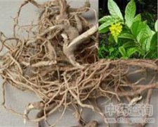

黄花倒水莲

拼音
Huánɡ Huā Dào Shuǐ Lián
别名
黄花大远志、黄花远志、吊黄、倒吊黄花
来源
远志科远志属植物黄花倒水莲Polygala aureocauda Dunn，以根入药。全年可采，洗净晒干。
生境分布
生于山坡疏林下或沟谷丛林中。分布广西、广东、湖南江西等地。
药材特点
落叶灌木，高1～3米，全株有甜味。根粗壮，淡黄色，肉质。树皮灰白色。叶互生；膜质：披针形或倒卵状披针形，长8～20厘米，宽3～7厘米，先端渐尖，基部渐狭或近圆形，全缘；具短柄。总状花序顶生，下垂；花黄色，左右对称；萼片5，内面2枚大而花瓣状；花瓣3，下部合生，中央的一瓣较大，呈囊状，近顶端处有流苏状附属物；雄蕊8，花丝下部合生；子房上位，2室。蒴果阔肾形，扁平。种子有毛，一端平截，一端突起。花期夏季。
性状
性状鉴别 根粗大，肥粗大，肥厚多肉，直径0.6-3cm，有分枝，表面淡黄色，味略苦。单叶互生，具柄；叶片质薄，多皱缩，完整叶呈窄长方形或倒卵状披针形，长5-20cm，宽3-7cm，先端渐尖，基部渐窄或楔形或近圆形，全缘，两面无毛或疏毛短柔毛。气微，味淡。
性味
甘、微苦，平。
功能主治
补益气血，健脾利湿，活血调经。用于病后体虚，腰膝酸痛，跌打损伤，黄疸型肝炎，肾炎水肿，子宫脱垂，白带，月经不调。
用法用量
0.5～1两。
化学成分
无化学成分
药理作用
1：无药理作用
摘录
《全国中草药汇编》